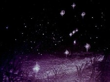
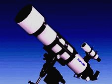

Wie wegwijs wil worden tussen al die lichtende puntjes en vlekjes, doet er goed aan allereerst de sterrenbeelden te leren kennen. Met hun markante vormen zijn het bakens die u helpen bij de orientatie. Een paar goede overzichts-sterrenkaarten komen van pas bij het leren herkennen van de sterrenbeelden. Het is handig om ze uit te printen en in een map te doen, bij voorkeur in plastic hoezen want het is in Nederland 's avonds vaak erg vochtig.
Er is altijd maar een deel van de sterrenhemel zichtbaar. De stand van de sterrenhemel hangt af van datum, tijdstip en waarnemingslokatie. Met onderstaande knop start u het planetariumprogramma Mini-AstroViewer, waarmee u kunt uitzoeken welke sterrenbeelden er op een bepaald moment vanaf een bepaalde waarnemingsplek te zien zijn. De standaard waarneemlokatie van Mini-AstroViewer is New York. Daarom als u Mini-AstroViewer hebt gestart, eerst op Location klikken en daarna ergens in de buurt van Nederland om de waarneemlokatie aan te passen.
Ook de maan en de planeten, voor zover zichtbaar, worden getoond. Maan en planeten hebben geen vaste plek ten opzichte van de sterrenbeelden, maar lijken er tussendoor te zwerven. Planeten draaien om onze zon, die maar één van de talloze sterren is. De maan draait om de aarde. Als u eenmaal weet dat een bepaalde planeet die avond zichtbaar is en in welk sterrenbeeld hij op dat moment staat, kunt u erachter komen hoe hij er door een bepaalde kijker uitziet door op één van de volgende planeetnamen te klikken en de apertuur (spiegel- of lensdiameter) van die kijker in te vullen
Mercurius
Venus
Mars
Jupiter
Saturnus
Uranus
Neptunus

Voor het vinden van sterrenstelsels, nevels en sterrenhopen is er een speciale compacte maar gedetailleerde kaart met bijgaande lijst van objecten.